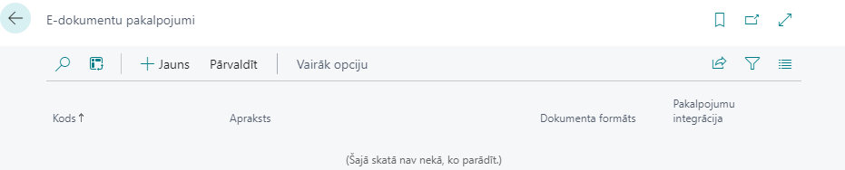
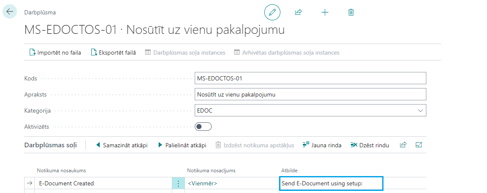
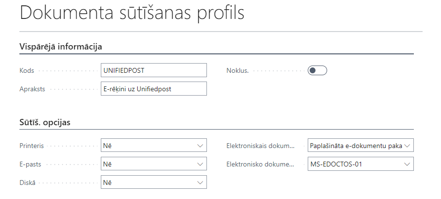
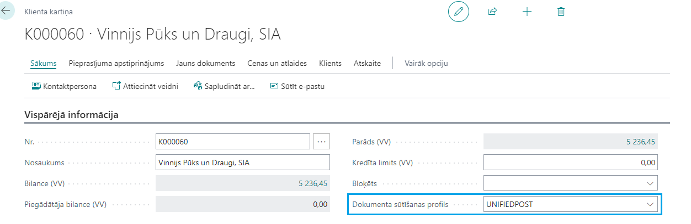
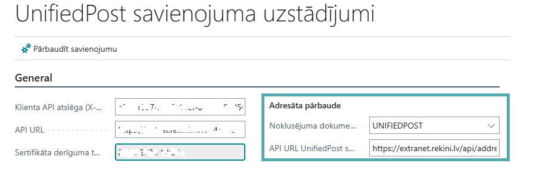
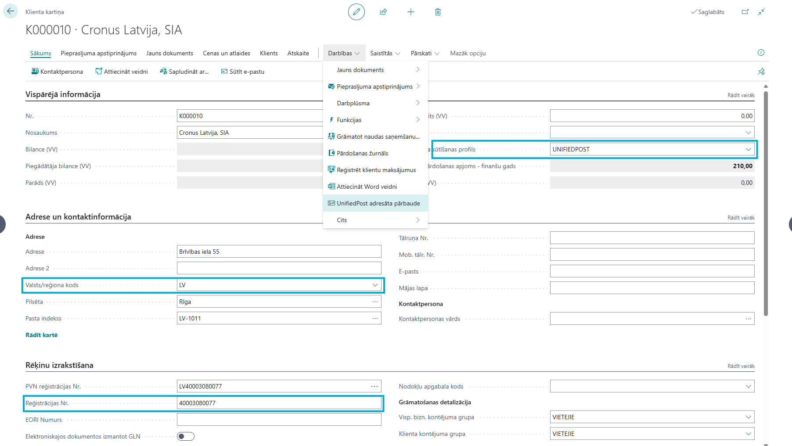

Instrukcija
Uzstādījumi
E-dokumentu pakalpojumi
Atveriet lapu E-dokumentu pakalpojumi, spiediet Jauns

Aizpildiet E-dokumentu pakalpojuma kartīti:
- Kods
- Apraksts
- Dokumenta formāts - norādiet PEPPOL BIS 3.0
- Pakalpojumu integrācija - izvēlieties e-rēķinu operatoru, kura pakalpojumus izmantosiet. Uz ekrāna parādīsies lūgums pārskatīt noteikumus un nosacījumus, iepazīstieties un spiediet Es piekrītu.

Spiediet Pakalpojuma integrācijas uzstādījumi, aizpildiet šo lapu:
- Klienta API Key - ievadiet e-rēķina operatora jūsu uzņēmumam piešķirto X-API-KEY
- API URL - ievadiet pieslēguma adresi, ko norādījis e-rēķinu operators

Pārliecinieties, ka savienojums ir izveidots, nospiežot Pārbaudīt savienojumu. Veiksmīga savienojuma gadījumā parādīsies paziņojums Pieslēgums ir OK.
Ja savienojums nav veiksmīgs, pārbaudiet visus ievadītos parametrus un mēģiniet vēlreiz. Ja savienojumu nav izdevies izveidot, sazinieties ar savu apkalpotāju.
Darbplūsma
Izveidojiet darbplūsmu. Atveriet lapu Darbplūsmas, spiediet Jauna darbplūsma no veidnes. Izvēlieties veidni "Nosūtīt uz vienu pakalpojumu" E-dokumentu grupā.
Darbplūsmas kartītes rindā laukā Atbilde nospiediet uz Send E-Document using setup.

Norādiet iepriekšējā punktā izveidoto E-dokumenta pakalpojumu.

Spiediet Labi
Aktivizējiet Darbplūsmu.

Dokumentu sūtīšanas profils
Izveidojiet Dokumentu sūtīšanas profilu. Atveriet lapu Dokumentu sūtīšanas profils, spiediet Jauns.
Aizpildiet Dokumenta sūtīšanas profilu:
- Kods
- Apraksts
- Elektroniskais dokuments - Paplašināta e-dokumentu paka
- Elektronisko dokumentu pakalpojuma plūsmas kods - norādiet iepriekšējā punktā izveidoto darbplūsmu

Klienti
Tiem klientiem, kuriem vēlaties nosūtīt e-rēķinus, izmantojot šo pakalpojumu, norādiet atbilstošo Dokumenta sūtīšanas profilu Klienta kartītes atbilstošajā laukā.

Unifiedpost adresātu pārbaude
Atveriet lapu E-dokumentu pakalpojumi, izvēlieties pakalpojumu, kas nodrošina integrāciju ar Unifiedpost, spiediet Pakalpojuma integrācijas uzstādījumi, sadaļā Adresāta pārbaude norādiet:
- Noklusējuma dokumentu sūtīšanas profils - norādiet dokumentu sūtīšanas profilu, kas paredz sūtīšanu ar Unifiedpost
- API URL UnifiedPost saņēmēja pārbaudei

Ja vēlaties, lai adresātu pārbaude notiktu automātiski, piemēram, reizi naktī, uzstādiet Procesu rindu. Atveriet lapu Procesa rindas ieraksti, spiediet +Jauns un aizpildiet:
- Izpildāmais objekta tips - Atskaite
- Izpildāmais objekta ID - 70151540
Aizpildiet cilni Periodiskums un iestatiet statusu Gatavs.

Kā lietot?
Priekšnosacījumi
Veiksmīgai e-rēķinu sagatavošanai un nosūtīšanai nepieciešami šādi uzstādījumi:
- Uzņēmuma informācija - jābūt aizpildītam laukam Bankas nodaļas kods, ievadiet šajā laukā bankas SWIFT kodu
- Valstis - jābūt aizpildītam laukam ISO kods un PVN shēma
- PVN kontējuma uzstādījumi - jābūt aizpildītam laukam Nodokļu kategorija
- Mērvienības - jābūt aizpildītam laukam Starptautiskā standarta kods
Klientu kartītēs jābūt aizpildītiem laukiem:
- Reģistrācijas Nr.
- Adrese
- Pilsēta
- Pasta indekss
- Valsts/reģiona kods
E-rēķinu nosūtīšana
Aizpildiet pārdošanas rēķinu vai pasūtījumu kā parasti. E-rēķinu vajadzībām nepieciešams aizpildīt lauku Atsaucoties uz.
Spiediet Grāmatot. Brīdī, kad rēķins būs iegrāmatos, notiks arī e-rēķina nosūtīšana.
E-dokumenta nosūtīšanas statusu iespējams pārbaudīt lapā E-dokumenti, ar konkrētu rēķinu saistītam e-dokumentam var piekļūt arī no iegrāmatotā rēķina Saistītās - E-dokuments - Atvērt E-dokumentu
E-rēķinu saņemšana
Ja esat atzīmējuši E-dokumenta pakalpojumam Automātiskā importēšana, tad saskaņā ar norādīto laika intervālu e-rēķini tiks importēti Dynamics 365 Business Central.
Ja automātiskā importēšana nav uzstādīta, e-rēķinus var saņemt nospiežot pogu Saņemt E-dokumentu pakalpojuma kartītē.
Katram E-rēķinam tiek izveidots ieraksts tabulā E-dokumenti. Ja veiksmīgi notikusi piegādātāja un preču un pakalpojumu atpazīšana, būs izveidots iepirkuma rēķins vai izveidota sasaiste ar iepirkuma pasūtījumu atbilstoši uzstādījumiem piegādātāja kartītē.
Iepirkuma dokumenta pielikumā būs pievienots rēķins PDF formātā.
Unifiedpost adresātu pārbaude
Lai pārbaudītu, vai klients ir gatavs saņemt e-rēķinus, izmantojot Unifiedpost pakalpojumus, klienta kartītē spiediet Darbības - Unifiedpost adresāta pārbaude Ja klients tiks atrasts Unifiedpost E-rēķinu saņēmēju sarakstā, klienta kartītē laukā Dokumenta sūtīšanas profils tiks norādīts Unifiedpost profils.

Lai pārbaudītu visus vai vairākus klientus, izmantojiet Darbības - Unifiedpost adresāta pārbaude funkciju klientu sarakstā bez filtriem vai norādot nepieciešamos filtrus. Lai nodrošinātu klientu pārbaudi, klientiem jābūt aizpildītam valsts kodam un reģistrācijas numuram. Netiek pārbaudīti klienti, kuriem laukā Bloķēts ir norādīts Viss.
Ja ir uzstādīta procesu rinda adresātu pārbaudei, tā notiks automātiski ar procesa rindai norādīto periodiskumu.